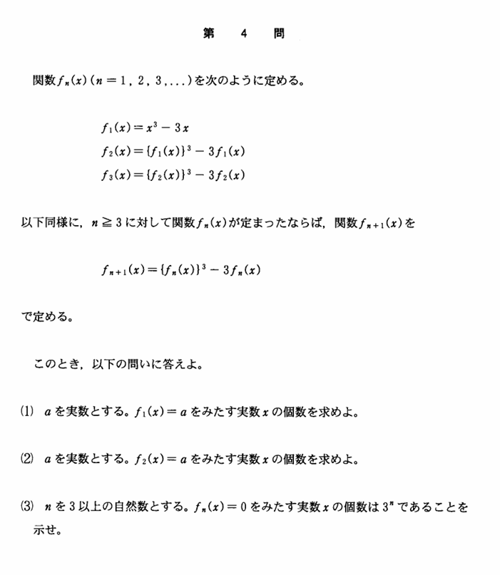

2004年 第4問
論証・関数

分析
論理的に論証する力が求められる。変換による解の対応が正確にできるかという題材は数学的にも重要で、変換前と後での解を整理する必要があり受験生を振り分けることができる。
得られた解が全て異なることの論証が必要であることに論証では気をつけなければならず、日頃から論理に気を使っている必要がある。論理的思考力を十分に問うことができている。
誘導
(1)は基礎問題である。(2)は一回の変換をするだけであるが、この問題の根幹をなす部分でもある。ここで、$\ f_1(x)=x^3-3x \ $の関数の性質に気づかせる役割を果たしている。
いきなり(3)を問うてしまうと、やるべきことが多く、論証が疎かにされがちである。そのため、(1),(2)で(3)を解く上で必要な処理と気づきを誘導して、(3)で十分に論理的思考力を問うという構造である。
背景
これはチェビシェフ多項式と関係がある。
チェビシェフ多項式とは、$\ \cos n\theta \ $を$\ \cos \theta\ $の多項式によって表すためのもの（n倍角の公式）で、チェビシェフ多項式を$\ T_n(x)\ $とおくと
$$T_n(\cos\theta)=\cos n\theta \ ,\ T_0=1\ ,\ T_1=x$$
が成り立つ。また、これの性質として
$$T_{n+1}(x)=2xT_{n}(x)-T_{n-1}(x)\quad (nは自然数)$$
という漸化式が成り立つ。
これを用いることで、
$$f_1(x)=2T_3\left(\frac{x}{2}\right)$$
と表せる。